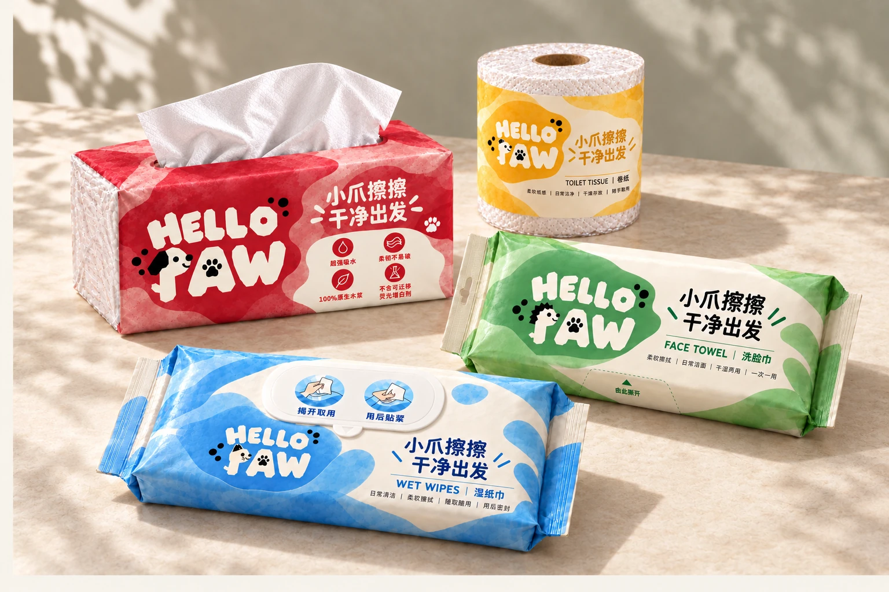
PROJECT DETAIL / 03
HELLO
PAW
DAILY PAPER PRODUCTS · PACKAGING DESIGN
主题 / THEME
日用纸品系列 / 品牌视觉与包装设计
作者 / AUTHOR
钟锡汉 ZHONGXIHAN
项目说明 / DESCRIPTION
以“小爪擦擦，干净出发”为品牌口号，将小狗、小熊、猫咪与刺猬融入字母 P，分别对应抽纸、卷纸、湿纸巾和洗脸巾。

日用纸品系列 / 品牌视觉与包装设计
钟锡汉 ZHONGXIHAN
以“小爪擦擦，干净出发”为品牌口号，将小狗、小熊、猫咪与刺猬融入字母 P，分别对应抽纸、卷纸、湿纸巾和洗脸巾。
围绕四款日用纸品建立统一的品牌包装语言，以动物角色和产品配色区分用途，同时保持品牌字标和信息层级的一致。
红、黄、蓝、绿四色水彩肌理与米白留白构成系列识别。动物造型融入字母 P，让品牌字标与产品角色形成关联；具体迭代记录待补充。
四款以动物形象的 P 为核心识别：竖向笔画构成身体，字母上部转化为头部，尾巴与耳朵进一步表达角色。HELLO / PAW 两行字标、A 内爪印与圆点共同维持系列一致性。
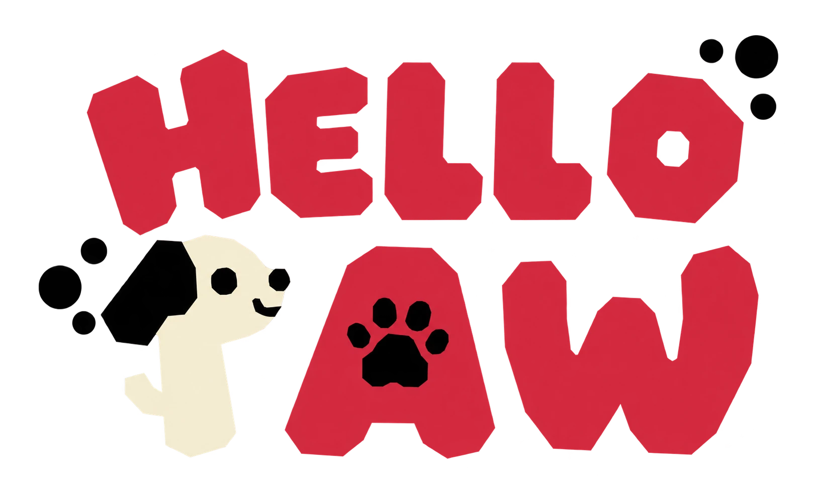
小狗 P：垂耳与前伸的鼻口形成亲近的侧脸，P 的竖笔构成身体，小尾巴强化动物形象；红色对应抽纸。
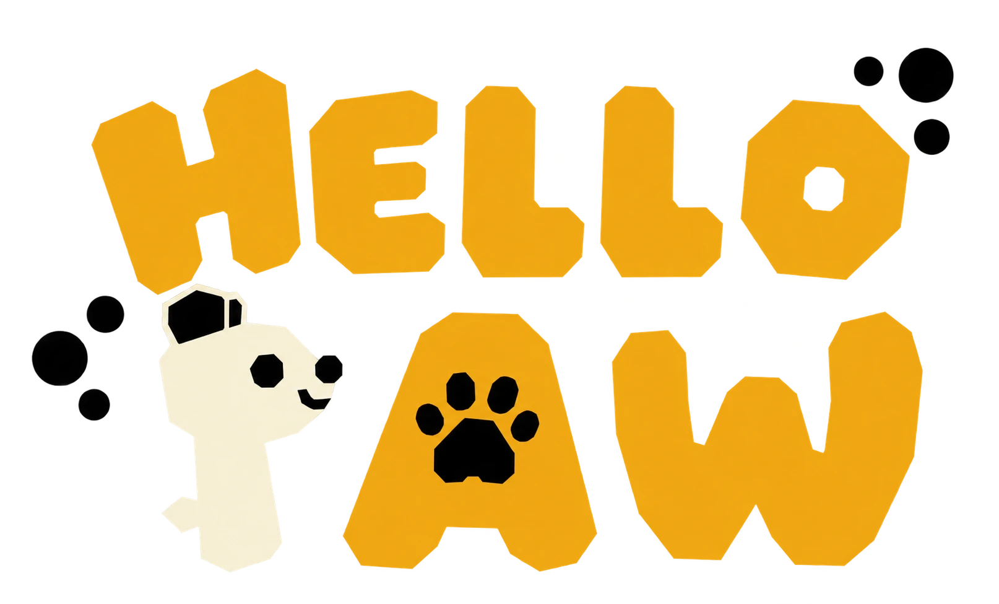
小熊 P：耳部轮廓与饱满的头部区分小狗，黑色眼鼻和微笑保留简洁表情；黄色对应卷纸。
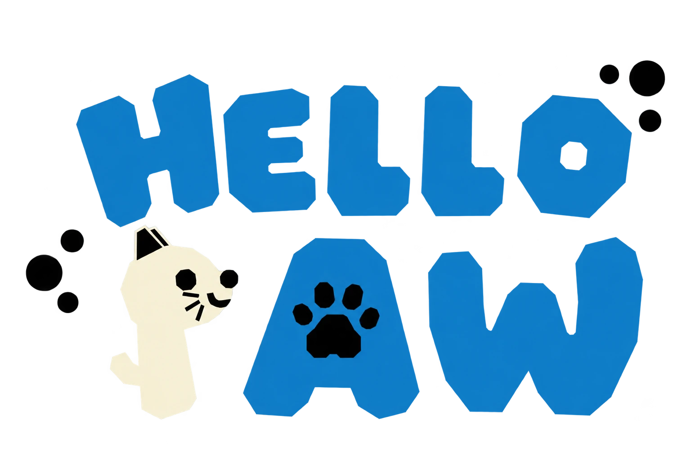
猫咪 P：三角耳和短胡须是识别重点，头部沿 P 的上部展开，竖笔与尾巴形成身体；蓝色对应湿纸巾。
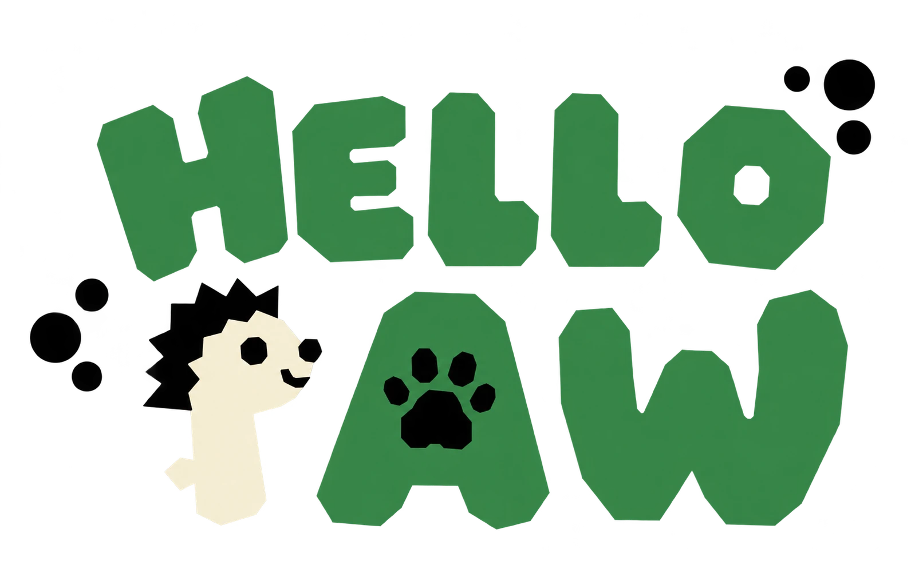
刺猬 P：锯齿状黑色背刺与前伸的脸部构成角色，保留 P 的竖向骨架及小尾巴；绿色对应洗脸巾。
将完整标志作为一个整体等比缩放，不单独调整 HELLO、P、A、W、爪印或圆点的位置。画布白边不计入标志尺寸；以实际图形外接边界测量宽高。四款外接比例略有差异，应用时统一图形总宽与视觉中心，不强行拉成相同比例。
设标志实际图形总宽为 W，定义 x = W / 10。四周最小净空建议为 1x，文字、功能图标、裁切线与封边不得进入该区域。上方示意虚线框表示标志保护区，实际制作应按图形边界计算，而非按图片白边计算。
完整组合标志印刷宽度建议不小于 30 mm，屏幕显示宽度建议不小于 160 px。小尺寸优先检查爪印、眼睛、猫咪胡须与装饰圆点的清晰度。低于建议尺寸不直接缩小使用，应另行制作经确认的简化版本。该值需结合印刷材料和工艺打样确认。
四款采用本次导入的图片：动物 P 保留米白色，HELLO、A、W 使用对应包装色，黑色细节不变。猫咪图片包含蓝色与米白色光晕，为图片自带效果，不作为标准配色或印刷规范。抽纸、卷纸、湿纸巾、洗脸巾分别使用红、黄、蓝、绿产品底色；确保米白字形与背景可辨，黑色表情和爪印清楚。原始白底稿保留备查，透明底版不带白色矩形。正式印刷色值、白墨及专色须由矢量原稿与打样确认，不用网页取色代替印刷标准。
禁止非等比拉伸、镜像、随意旋转、重排两行字标、替换字体、改变动物对应产品、删除爪印或圆点、添加描边和发光效果，以及把完整标志跨越开口、折线或封合区。包装透视须将完整标志作为同一平面投射，不逐字变形。
当前展示为透明底位图；生产前需整理矢量母版，并复核最小细节。以上规范为设计建议，非已验证的印刷参数。
以下四款展开图为参考尺寸与贴版区域模板，不是经工厂验证的生产刀模，也未包含完整最终印刷图稿。实际膜宽、折线、封合余量、开口及工艺须结合材料、设备和实物打样校核，禁止直接用于生产。
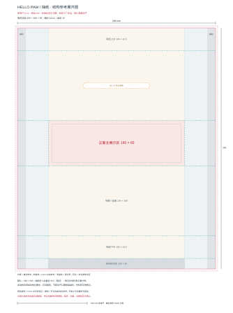
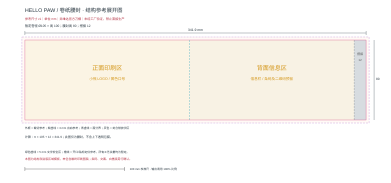
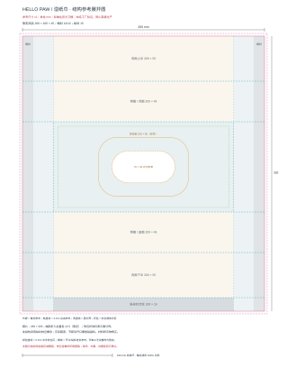
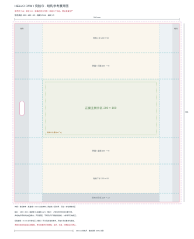
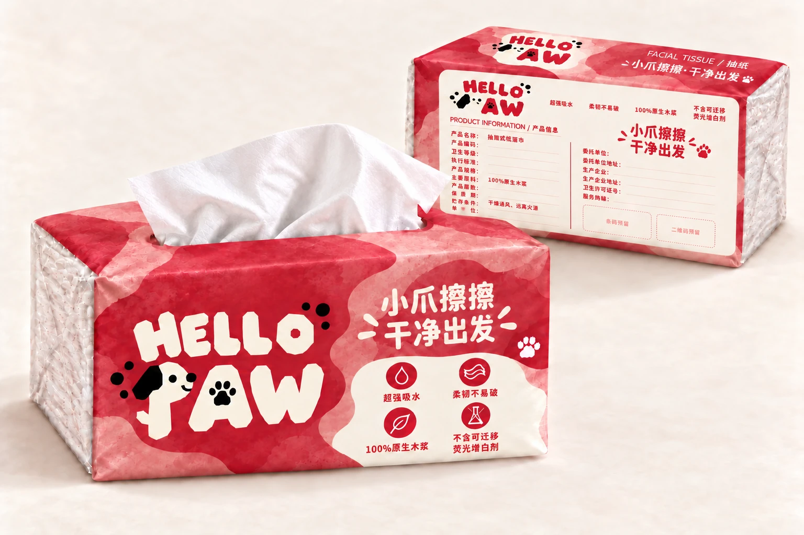
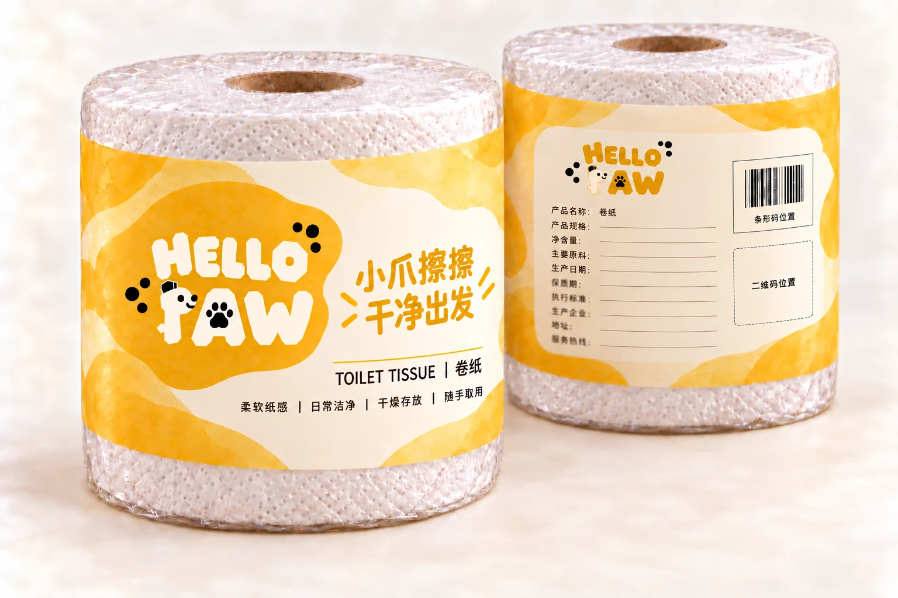
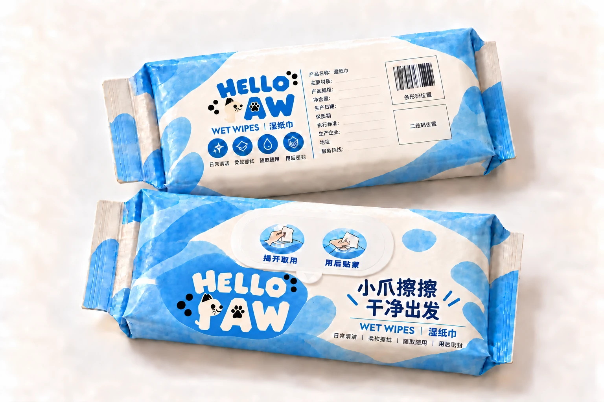
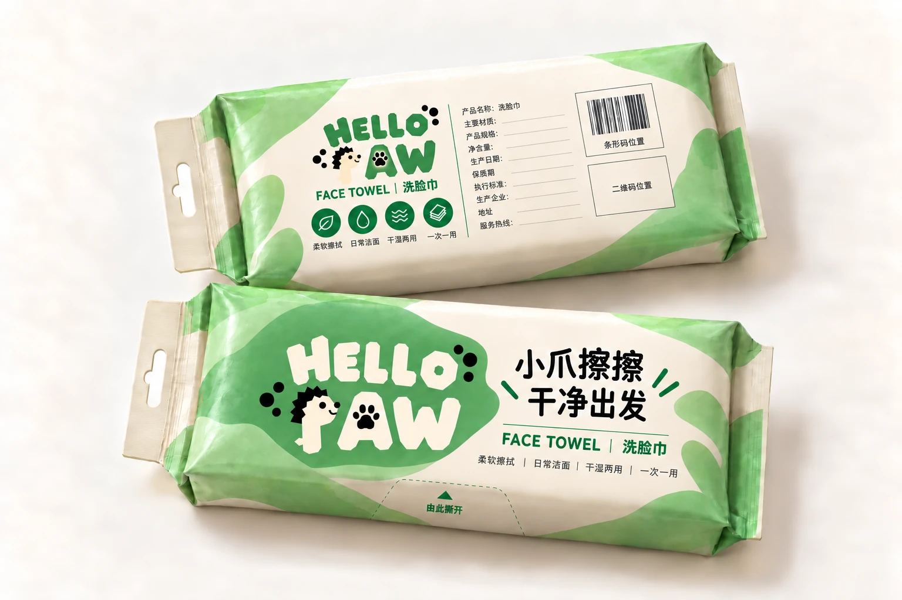